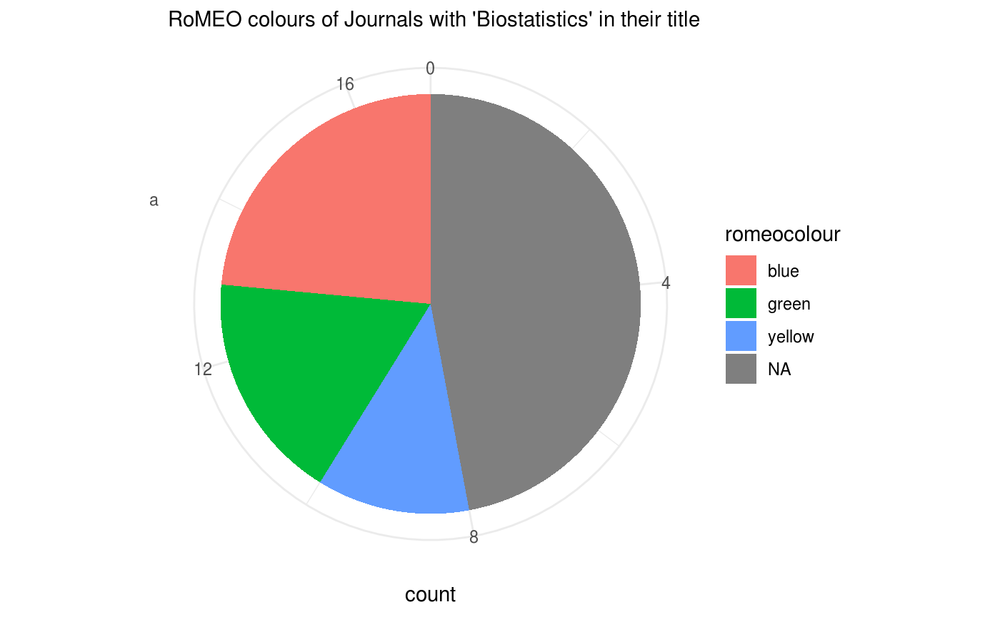

Query Journal Data
NOTE: SHERPA/RoMEO data is released under the Creative Commons Attribution-NonCommercial-ShareAlike 2.5 (CC BY-NC-SA 2.5) license. A suggestion of citation is included in rromeo via citation("rromeo")
The SHERPA/RoMEO database contains information on the archival policies of academic journals and publishers. Some journals let you archive a version of a submitted manuscript or book chapter (= preprint) before it’s reviewed, some also let you archive the peer-reviewed but not formatted version (= postprint) and some even let you archive the peer-reviewed and formatted version of the manuscript (= pdf or publisher’s version). The goal of rromeo is to make this database accessible through R.
Query using ISSN
Let’s try to access summary data using the ISSN of a journal:
## title issn
## 1 A Critical Introduction to Media and Communication Theory 1947-6264
## romeocolour preprint postprint pdf pre_embargo post_embargo
## 1 yellow can restricted restricted <NA> 12 months
## pdf_embargo
## 1 12 monthsFrom this we see that the archival of the preprint is permitted while some restrictions apply for both postprint and pdf version of the manuscript. The restrictions are visible in the *_embargo field: the authors have to wait 12 months after publication before archiving postprint and formatted manuscript.
Query by Journal Title
We can also search journal by names using rr_journal_find() the first argument name is the string to look for and the second argument qtype defines the way to match. If we want to look at journals that have the word Biostatistics in their title we can use the following code:
## 17 journals match your query terms.## Only titles and ISSNs of journals returned. Get more information using `rr_journal_name()`## title
## 1 American Journal of Biostatistics
## 2 Annals of Biometrics and Biostatistics
## 4 Austin Biometrics and Biostatistics
## 5 Biometrics & biostatistics international journal
## 6 Biostatistics
## 7 Biostatistics -Basel-
## 8 Biostatistics, bioinformatics and biomathematics
## 9 Edorium Journal of Biostatistics
## 10 Enliven: Biostatistics and Metrics
## 11 Epidemiology Biostatistics and Public Health
## 12 International Journal of Biostatistics
## 13 International journal of clinical biostatistics and biometrics
## 14 Journal of Biometrics and Biostatistics
## 15 Journal of epidemiology and biostatistics
## 16 JP journal of biostatistics
## 17 Monographs in Epidemiology and Biostatistics
## issn
## 1 1948-9889
## 2 2374-0116
## 4 2378-9840
## 5 <NA>
## 6 1465-4644
## 7 1527-2486
## 8 0976-1594
## 9 <NA>
## 10 <NA>
## 11 2282-2305
## 12 1557-4679
## 13 <NA>
## 14 2155-6180
## 15 1359-5229
## 16 0973-5143
## 17 0740-0845rr_journal_find() will only return the list of titles and ISSN. You can then use this list to select the exact journal you are looking for (in this case, it is recommended to use the ISSN). Alternatively, you may want to get data for all those journals. To achieve this, you need to use the function rr_journal_name() which uses a similar syntax to rr_journal_find():
## 17 journals match your query terms.## Recursively fetching data from each journal. This may take some time...## title issn romeocolour
## 14 Journal of epidemiology and biostatistics 1359-5229 <NA>
## 15 JP journal of biostatistics 0973-5143 <NA>
## 16 Monographs in Epidemiology and Biostatistics 0740-0845 yellow
## preprint postprint pdf pre_embargo post_embargo pdf_embargo
## 14 <NA> <NA> <NA> <NA> <NA> <NA>
## 15 <NA> <NA> <NA> <NA> <NA> <NA>
## 16 can restricted unclear <NA> 12 months <NA>The query may run for longer but it gives you all the information on all returned journals.
You can also use other type of name matching with other options for qtype, for example when qtype = "starts" the query string have to begin the title of the journal:
## 3 journals match your query terms.## Recursively fetching data from each journal. This may take some time...## title issn romeocolour
## 1 Biostatistics 1465-4644 green
## 2 Biostatistics -Basel- 1527-2486 <NA>
## 3 Biostatistics, bioinformatics and biomathematics 0976-1594 <NA>
## preprint postprint pdf pre_embargo post_embargo pdf_embargo
## 1 can can cannot <NA> <NA> <NA>
## 2 <NA> <NA> <NA> <NA> <NA> <NA>
## 3 <NA> <NA> <NA> <NA> <NA> <NA>While using qtype = exact the title of the journal should match exactly the used string:
## title issn romeocolour preprint postprint pdf
## 1 Biostatistics 1465-4644 green can can cannot
## pre_embargo post_embargo pdf_embargo
## 1 <NA> <NA> <NA>Query Publisher Data
Not only can rromeo query journals archival policies but it can do the same for publishers. Indeed the SHERPA/RoMEO database contains much information on publishers’ policies, with many ways to retrieve the information.
Query by Publisher’s Name
With rr_publisher_name() you can query publishers’ information using the name of the publishers. The first argument name is the string to match publisher’s names the second argument qtype gives the type of matching:
## romeoid publisher
## 1 2632 Oxford Brookes University
## 2 1892 Oxford Centre for Hebrew and Jewish Studies
## 3 986 Oxford University Anthropological Society
## 4 55 Oxford University Press
## 5 2072 University of Oxford, Oxford Uehiro Centre for Practical Ethics
## alias romeocolour preprint postprint pdf
## 1 <NA> blue cannot can can
## 2 <NA> blue unclear can cannot
## 3 <NA> green can can can
## 4 OUP yellow can restricted unclear
## 5 <NA> green can can canWhen qtype = "all" the publishers’ names should contain all the words, in any order, included in provided string:
## romeoid publisher
## 1 2632 Oxford Brookes University
## 2 986 Oxford University Anthropological Society
## 3 55 Oxford University Press
## 4 2072 University of Oxford, Oxford Uehiro Centre for Practical Ethics
## alias romeocolour preprint postprint pdf
## 1 <NA> blue cannot can can
## 2 <NA> green can can can
## 3 OUP yellow can restricted unclear
## 4 <NA> green can can canWhile when qtype = "exact" the publishers’ names should contain all the words in the same order as provided in the string:
## romeoid publisher alias romeocolour
## 1 986 Oxford University Anthropological Society <NA> green
## 2 55 Oxford University Press OUP yellow
## preprint postprint pdf
## 1 can can can
## 2 can restricted unclearFinally, when qtype = "any" publishers’ names can contain any words of the provided string.
Query by RoMEO’s ID
The first column of publishers’ policies data frame returned by rromeo is named romeoid it corresponds to the identifier used by SHERPA/RoMEO to identify publishers in a unique way:
## romeoid publisher alias romeocolour preprint postprint
## 1 55 Oxford University Press OUP yellow can restricted
## pdf
## 1 unclearQuery by Country or Region
You can also query publishers information based on the country they are in using their two-letters ISO codes (see ?rr_publisher_country for more information):
## romeoid
## 1 1936
## 2 2786
## 3 1556
## 4 2741
## 5 2159
## 6 1823
## 7 1745
## 8 1726
## 9 1742
## 10 1414
## 11 1867
## 12 3078
## 13 2084
## 14 1362
## 15 1753
## 16 2922
## 17 1208
## 18 2845
## publisher
## 1 Acta Advances in Agricultural Sciences
## 2 Avicenna Journals
## 3 Azad University, Mahlkesi Branch, Mechanical Engineering Department
## 4 Geodynamics Research International Bulletin
## 5 International Journal of Management, Accounting and Economics
## 6 Islamic Azad University, Najafabad Branch
## 7 Islamic Azad University, Shahreza Branch
## 8 Islamic Press
## 9 Jahan Elm Institute of Higher Education
## 10 Kerman University of Medical Sciences
## 11 Oboor Publishing Group
## 12 Shahid Sadoughi University of Medical Sciences
## 13 Shefa Neuroscience Research Center
## 14 Shiraz University
## 15 Society of Diabetic Nephropathy Prevention
## 16 Tabriz University of Medical Sciences
## 17 Tehran University of Medical Sciences
## 18 University of Maragheh, Department of Mathematics
## alias romeocolour preprint postprint pdf
## 1 <NA> blue cannot can can
## 2 Advancements in Science green can can can
## 3 <NA> blue cannot cannot can
## 4 <NA> blue cannot cannot can
## 5 <NA> green can can can
## 6 <NA> blue cannot can can
## 7 <NA> blue unclear can can
## 8 <NA> blue cannot cannot can
## 9 <NA> blue unclear can can
## 10 <NA> blue cannot can can
## 11 <NA> green can can can
## 12 <NA> yellow can restricted restricted
## 13 <NA> green can can can
## 14 <NA> blue cannot can can
## 15 <NA> blue cannot cannot can
## 16 <NA> blue cannot can can
## 17 <NA> green can can can
## 18 <NA> green can can canIt is also possible to query publisher’s information on a specific region or continent using rr_publisher_continent() (see the help page for the list of available regions):
## romeoid
## 1 1514
## 2 1853
## 3 959
## 4 736
## 5 222
## 6 2343
## 7 1358
## 8 220
## 9 98
## 10 518
## 11 638
## 12 97
## 13 1813
## 14 255
## 15 248
## 16 151
## 17 161
## 18 383
## 19 290
## 20 2420
## 21 150
## 22 160
## 23 553
## 24 550
## 25 2501
## 26 2453
## 27 571
## 28 626
## 29 1928
## 30 1026
## 31 557
## 32 3226
## 33 163
## 34 745
## 35 284
## 36 1397
## 37 1310
## 38 665
## 39 2471
## 40 2472
## 41 598
## 42 623
## 43 666
## 44 2134
## 45 670
## 46 2755
## 47 2385
## 48 581
## 49 1767
## 50 264
## 51 1329
## 52 1432
## 53 3041
## 54 3016
## 55 164
## 56 1946
## 57 2532
## 58 380
## publisher
## 1 ANU Press
## 2 ANZAMEMS
## 3 ARRB Group
## 4 Association of Occupational Science
## 5 Auckland University of Technology, School of Communication Studies, Pacific Media Centre
## 6 Australasian Association for Information Systems
## 7 Australasian Medical Journal
## 8 Australasian Society for Computers in Learning in Tertiary Education
## 9 Australian Academic Press
## 10 Australian Accoustical Society
## 11 Australian Clearinghouse for Youth Studies
## 12 Australian Computer Society Inc
## 13 Australian International Academic Centre
## 14 Australian Library and Information Association
## 15 Australian Mathematical Society
## 16 Australian Physiotherapy Association
## 17 Australian Psychological Society
## 18 Australian Rock Art Research Association
## 19 Australian Society of Anaesthetists
## 20 Bareknuckle Books
## 21 College of Intensive Care Medicine of Australia and New Zealand
## 22 CSIRO Publishing
## 23 e-Content Management
## 24 Early Childhood Australia
## 25 Edith Cowan University
## 26 EMAJ
## 27 Field Naturalists Club of Victoria
## 28 Griffith University, Griffith Law School, Socio-Legal Research Centre
## 29 Infinity Press
## 30 Institute of Foresters of Australia
## 31 International Association for Statistics Education
## 32 LexisNexis Australia
## 33 Libertas Academica
## 34 Macquarie University, Department of International Communication
## 35 Magnolia Press
## 36 Mathematics Education Research Group of Australasia
## 37 Melbourne University, Law Review Association
## 38 Monash University ePress
## 39 New Zealand Ecological Society
## 40 New Zealand Institute of Forestry
## 41 New Zealand Medical Association
## 42 New Zealand Nurses Organisation
## 43 New Zealand Society of Animal Production
## 44 Outdoor Council of Australia
## 45 Python Papers
## 46 Queensland University of Technology
## 47 Queensland University of Technology, Faculty of Law
## 48 RMIT Publishing
## 49 Royal New Zealand College of General Practitioners
## 50 Royal Society of New Zealand
## 51 Royal Society of Victoria
## 52 SETScholars
## 53 Studies in Material Thinking
## 54 Sydney Law School
## 55 Thomson Reuters
## 56 UTS ePRESS
## 57 Western Australian Institutes for Educational Research
## 58 World Institute for Engineering and Technology Education
## alias
## 1 <NA>
## 2 Australian and New Zealand Association for Medieval and Early Modern Studies
## 3 <NA>
## 4 <NA>
## 5 <NA>
## 6 AAIS
## 7 <NA>
## 8 ascilite
## 9 <NA>
## 10 <NA>
## 11 <NA>
## 12 <NA>
## 13 AIAC
## 14 <NA>
## 15 <NA>
## 16 <NA>
## 17 <NA>
## 18 <NA>
## 19 <NA>
## 20 <NA>
## 21 <NA>
## 22 <NA>
## 23 <NA>
## 24 <NA>
## 25 <NA>
## 26 <NA>
## 27 <NA>
## 28 <NA>
## 29 <NA>
## 30 <NA>
## 31 IASE
## 32 <NA>
## 33 <NA>
## 34 <NA>
## 35 <NA>
## 36 <NA>
## 37 <NA>
## 38 <NA>
## 39 <NA>
## 40 <NA>
## 41 <NA>
## 42 <NA>
## 43 <NA>
## 44 <NA>
## 45 <NA>
## 46 <NA>
## 47 <NA>
## 48 <NA>
## 49 <NA>
## 50 <NA>
## 51 <NA>
## 52 <NA>
## 53 <NA>
## 54 <NA>
## 55 Professional
## 56 <NA>
## 57 <NA>
## 58 WIETE
## romeocolour preprint postprint pdf
## 1 green can can <NA>
## 2 green can can can
## 3 blue cannot can cannot
## 4 white cannot restricted cannot
## 5 blue cannot can can
## 6 green can can can
## 7 green can can <NA>
## 8 green can can can
## 9 blue cannot can cannot
## 10 white cannot cannot <NA>
## 11 green can can restricted
## 12 green can can <NA>
## 13 green can can can
## 14 blue unclear can <NA>
## 15 yellow can cannot restricted
## 16 blue cannot cannot can
## 17 white unclear restricted cannot
## 18 white cannot restricted <NA>
## 19 white cannot restricted <NA>
## 20 green can can can
## 21 white cannot cannot cannot
## 22 green can can cannot
## 23 green can can cannot
## 24 white unclear unclear <NA>
## 25 blue cannot can can
## 26 green can can can
## 27 blue unclear can can
## 28 blue cannot can can
## 29 green can can can
## 30 white cannot restricted restricted
## 31 blue unclear can <NA>
## 32 blue unclear can restricted
## 33 green can can can
## 34 white unclear unclear <NA>
## 35 white cannot cannot cannot
## 36 blue unclear cannot can
## 37 blue cannot can can
## 38 yellow can cannot <NA>
## 39 yellow can restricted restricted
## 40 yellow can restricted restricted
## 41 white cannot cannot restricted
## 42 blue cannot cannot can
## 43 white unclear restricted <NA>
## 44 blue unclear cannot can
## 45 blue unclear can <NA>
## 46 green can can can
## 47 green can can can
## 48 green can can cannot
## 49 blue cannot can can
## 50 yellow can restricted cannot
## 51 white cannot cannot cannot
## 52 green can can can
## 53 blue unclear cannot can
## 54 blue cannot cannot can
## 55 blue cannot can <NA>
## 56 green can can can
## 57 blue cannot can can
## 58 white cannot cannot <NA>Query by RoMEO colour
RoMEO assigns a colour depending on the different policies of publishers.
| RoMEO colour | Archiving policy |
|---|---|
green |
can archive preprint, postprint and publisher’s version |
blue |
can archive postprint or publisher’s version |
yellow |
can archive preprint |
white |
archiving not formally supported |
(Table taken from http://www.sherpa.ac.uk/romeo/definitions.php#colours)
You can query journals using this classification with the function rr_romeo_colour():
In this example vignette we do not run the query because it can run for quite long as it returns the policies of all publishers of the given colour (you can see the numbers of publishers in each category in the following web page http://www.sherpa.ac.uk/romeo/statistics.php?la=en&fIDnum=|&mode=simple).
Setting up an API key
SHERPA/RoMEO lets you make 500 queries per day per IP address for free. If you get past this limit you will get the following error:
You have exceeded the free use limit of 500 requests per day. To go beyond this limit you should register for a free API key available at http://www.sherpa.ac.uk/romeo/apiregistry.phpWe encourage you to register for a free API key at the above-mentioned address.
To provide your API key to rromeo you can: 1. provide it as a character string as the key arguments of rromeo functions as rr_*(..., key = "my_key_as_a_string"), we do not recommend this method as your API key will be available from your history; 1. you can define the variable SHERPAROMEO_KEY in an .Renviron file in your working directory, the file should contain the following line SHERPAROMEO_KEY=my_key_without_quotes; 1. you can also define the variable SHERPAROMEO_KEY in an .Rprofile file in your working directory, the file should contain the following line SHERPAROMEO_KEY="my_key_with_quotes".
Visualization Example
rromeo can be quite useful in bibliometric studies to report on archival policies. For example, we can now have a quick visual overview of the policies of journals in a given field from the results obtained in a query:
## Registered S3 methods overwritten by 'ggplot2':
## method from
## [.quosures rlang
## c.quosures rlang
## print.quosures rlangtheme_set(theme_minimal())
stacked_res <- stack(res[, 4:6])
ggplot(stacked_res, aes(x = ind, fill = values)) +
geom_bar() +
labs(x = NULL,
subtitle = "Archiving Policies of Journals with 'Biostatistics' in their title")
ggplot(res, aes(x = "a", fill = romeocolour)) +
geom_bar() +
coord_polar("y") +
labs(x = NULL,
subtitle = "RoMEO colours of Journals with 'Biostatistics' in their title")